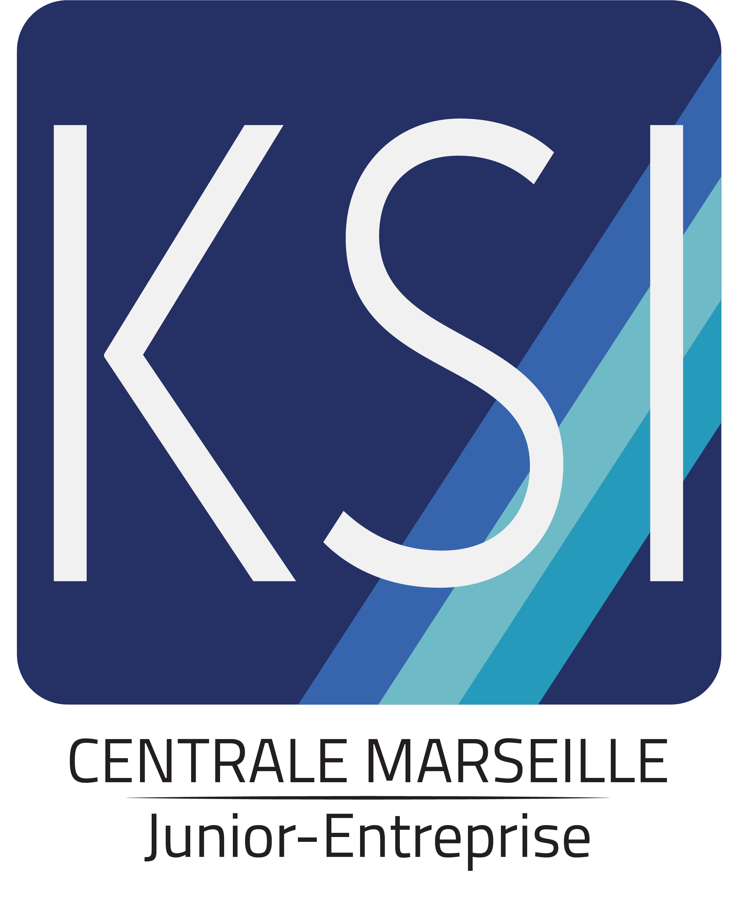

Fondée en 1974, KSI Centrale Marseille était à l’origine une entreprise étudiante de l’Ecole Supérieure d’Ingénieurs de Marseille (ESIM). Devenue CEPHIEM en 2003 suite à la formation de l’EGIM, CEPHIEM est finalement dissoute à la naissance de l’Ecole Centrale. La Junior-Entreprise® est reconstruite en 2008 sous le nom de KSI Centrale Marseille. Redéveloppant notre activité ; notre savoir-faire nous a rapidement permis d’obtenir le statut de Junior-Création® en 2009, de Pépinière Junior-Entreprise® en 2011 et enfin celui de Junior-Entreprise® en 2012. Forte d’une formation Centralienne reconnue, KSI Centrale Marseille est très vite devenu une référence dans de nombreux domaines, nous permettant de placer notre expertise et notre innovation au cœur des projets de nos clients. C'est donc en 2019 que nous avons rejoint le groupe restreint de la L30 qui regroupe les 30 meilleures Junior-Entreprises® de France.
Les Junior-Entreprises (J.E.) sont des associations à vocation économique et pédagogique, à but non lucratif. Associations étudiantes implantées dans les établissements d’enseignement supérieur, les Junior-Entreprises se définissent comme un vecteur d’employabilité et d’engagement des étudiants. En leur permettant de mettre en pratique l’enseignement théorique qu’ils reçoivent, les Junior-Entreprises constituent une passerelle entre les études et l’entreprise, au service de l’insertion professionnelle des étudiants. Ainsi, elles proposent des services aux entreprises et permettent aux étudiants de mettre en pratique leurs savoirs en répondant aux besoins de clients variés : grands groupes, ETI, PME, TPE, administration ou particulier.
La formation à Centrale Marseille est marquée par l'héritage des écoles dont elle est issue et par l’appartenance au groupe des Écoles Centrale. L’organisation pédagogique est ainsi centrée sur la formation d’ingénieur centralien correspondant à un enseignement pluridisciplinaire ayant vocation à former des ingénieurs généralistes de forte culture scientifique et technique, leaders, prêts à agir sur une scène internationale et à relever les défis du XXIe siècle.
Ainsi, nous avons 4 domaines de compétences dans lesquels nous pouvons réaliser vos projets :
+33 (0)4 91 05 45 20
ksi@centrale-marseille.fr